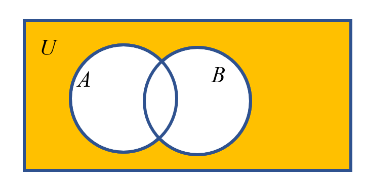
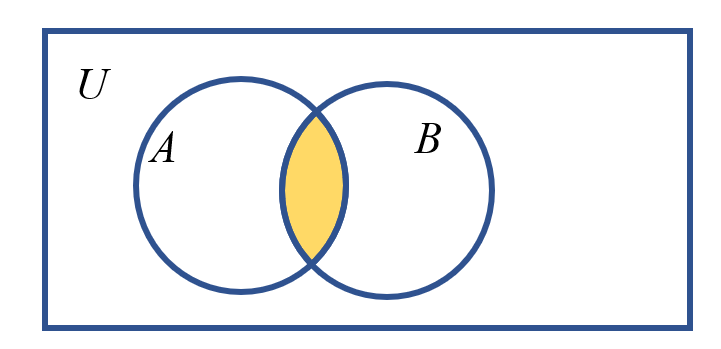
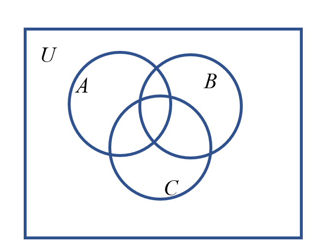
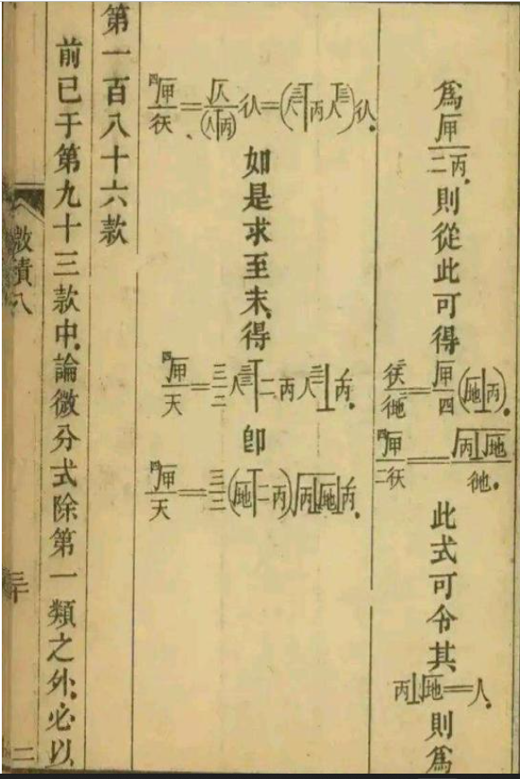

3LN - 集合的运算, 以及全新版本的函数
一些疑问
-
练习题为什么忽然多忽然少?
- 那就是看这节课对于新手的友好程度, 以及取决于概念讲没讲完了.
-
为什么有时候不设置自己在网上查资料的环节?
- 有的东西很难查, 概念不太好懂, 对于没有建立完全概念的初学者而言是很危险的. 在安全的情况下我会尽可能设置的!
引言
数学家拿到什么东西都喜欢算一下.
我们以目睹过的:
- 数: \(114+514=628\) .
- 图形: 你们小学的时候肯定没少整.
- 集合: 你们上节课目睹的
从运算(operation)说起
运算是什么?
- 觉得问出这个问题的这个人是神经病?
- 格局打开. 要有curiosity.
- 诶, 英语好像是"操作"的意思啊...
- 就这样, 运算(在一定程度上)就是操作.
我们心目中的运算: \(+,-,\times,\div\)
但是, \(1/x, x^2, |x|\) 都可以叫做运算.
- 有什么区别?
- 上面的是对于两个数的运算, 下面的是对一个数的运算.
- 二元(个东西的)运算符, 一元运算符...
哦, 经过这这样的探讨, 我们感到: 运算时对一个或多个对象按照某个规则产生一个新对象的过程(可以和原来一样).(就是描述操作!).
例子: \(3+2, 3\times2, 3^2,\cdots\)
联系实际:
- 你们每个人都是一个对象(object), 规则(rule)叫做找爸爸(father), 就得到了一个"新"对象(你爸爸).
只不过有些运算规定的比较好(well-defined), 有些不好(poor-defined).
什么叫做好的运算?
- 运算律记得吗?
- 加法交换律 \(a+b=b+a\)
- 加法结合律: \((a+b)+c=a+(b+c)\)
- 那一堆,远远不止这些!
- 不要小看这些, 大学玩命学这个.
- 当然对象不是数这么简单了. 会很复杂.
- 大学的代数, 是把数抽象出来, 算什么都可以, 看是否满足某种运算律.
- 那时候我们初中高中的代数, 几何都会放在一起(因为你学过直角坐标系了), 归为分析一类.
- 为什么要记这些?
- 运算律越多越好!
我们还可以定义!
平面上两个点A, B. 规定" \(A 🐕 B\) "表示AB的中点.
这个运算好吗?
- 交换律? OK.
- 结合律? NO. (重心) 当ABC三点是同一个点的时候成立(平凡,trivial)
举个不满足交换率的例子: 定义 \(A 💡 B\) 表示 \(A\) 关于 \(B\) 的对称点.
集合定义了怎样的运算?
这些运算是不是好的运算呢?
-
并集(Union set): 集合里面的所有元素. \(\cup\) : 开口向上的马蹄形.
也就是 \(A\cup B = \{ x|x\in A 或x\in B \}\)
来源, Union.(我们联合!) 或(or): 满足一条可以, 满足两条更可以!
- 画一下Venn图.
- 或: 生活与数学.
- 看1(1) .
- 也能表示集合之间的包含关系. 这里注意空集!
-
交集(intersection set): 集合里面的共有元素. \(\cap\) : \(A\cup B = \{ x|x\in A 且x\in B \}\)
- Venn图
- 看1(2)
- 也能表示集合之间的包含关系.
- 来源是U倒过来了.
-
它们好吗? 自己玩玩看!
- 是的, 它们都是好的. ( \(\TeX\) 敲集合太麻烦, 所以省略.).
- 问题: 把交集和并集放在一起, 满足结合律吗?
-
补集(complementary set): 从一个范围里面刨掉另一些东西. "不在, 其他"
- 得有一个范围! 那就是全集.
- 全集: 大范围要给定. 范围可以足够大. 一般用 \(U\) (斜体)表示.
- 补集: \(\complement_UA\) (不是铜( \(\text{Cu}\) ), 化学式一般都是正体, 所以哪天见了 \(CaCO_3\) 这样的就尽情吐槽吧)
\(\complement_UA:=\{x\in U | x\cancel\in A\}.\)
- Venn图.
- 看1(3).
看3(1).
- Trivial, 注意两边大括号.
- 不要认为麻烦. 多用用就熟练了.
- \(A\cap \left(\complement_UB\right)\) 是什么.
- 用人话说. 在A且不在B.
- 所有运算可以直观理解 : 并集=或, 交集=且, 补集=不在.
- 看Venn图.

不在(A或B) = \(\complement_U(A\cup B)\)
(不在A)而且(不在B)) = \(\complement_UA\cap \complement_UB\)
- 也就是 \(\complement_U(A\cup B)\) = \(\complement_UA\cap \complement_UB\) (德摩根定律, De Morgan's laws)
- 自己画图验证: \(\complement_U(A\cap B)\) = \(\complement_UA\cup \complement_UB\)

给三个集合

读一读, 写一写(现代汉语).
数学语言
各国的数学家用不同的母语, 但有一套体系可以更好传达信息.
这些是数学语言的一些实例. 比如你以前学过的 \(\therefore , \because, \perp,\cdots \#\) .
所以给我们看英文论文带来了很大的方便!
- 证明: Proof
- 定理: Theorem
- 引理: Lemma
- 命题: Proposition...
这是行内的黑话
看3(2).
- 想想你们的小学奥数, 是不是很像?
- 有一个问题 \(|A|+|B|\quad?\quad|A\cup B|\)
- 啊哈, 容斥原理(
Principle of Inclusion and Exclusion,PIE)! (留个悬念)
- 为什么要说"原理"? 课下参见容斥原理和组合计数(蒋炎岩).(2小时)
- \(|A|+|B|=|A\cup B|+|A\cap B|\) .
- 那么三个集合呢?
$$
\begin{aligned}
|A|+|B|+|C|&=|A\cup B\cup C|\\
&+|A\cap B|+|B\cap C|+|C\cap A|\\
&-|A\cap B\cap C|
\end{aligned}
$$
- \(n\) 个呢? 提示: 前面的系数和 \((-1)^n\) 有关.
- 如果 \(|A\cap B |=|A|+|B|\) , 那么 \(A\cap B = \phi\) .
故事时间
第三次数学危机(不知道上次的集合: 老师不会给你讲的集合故事那个视频看了没, 不过in a nutshell:)
- Cantor创建了集合论之后, 好用啊!
- 大家都用了集合论(100年前).
- Russell说: 集合论好像有点问题!
- Russell 悖论(paradox): 科普版: 理发师悖论.
- 专业: 规定一个集合 \(A\) , \(A=\{x|x\cancel\in A\}\) , 问 \(x\in A\) ?
- 集合真的对吗?
- 后续. Cantor死在精神病院里.
- 拓展阅读: 集合论, ZFC公理体系.
- 集合有定义, 我们学的是描述性的定义, 会有很多漏洞.
- 总之, 到时候的教科书很艰难, 不推荐现在阅读, 要不然你就会被一堆奇怪的符号跳脸输出, 还看不懂.
- 但是很暴力, 就是强制去除了着一种情况, 手段很暴力.
- 但是集合在其他的地方还是用的很好的.
下面劝退文科:
- 白马非马
- 政治老师: 混淆了一个事物的内涵和外延
- wtf is 内涵?
- wtf is 外延?
- poorly defined
- 数学: 集合: 白马不等于马. 士兵: 我只让不出城的人出城!
然后说说函数(function)
定义
对于非空(non-empty)数集 \(A,B\) , 存在对应法则(corresponding rule), \(f: A\to B\) .
对于 \(\color{red}\forall x\in A\) , 在 \(B\) 中存在唯一确定(univalent)的 \(y\) 与之对应.
写作 \(y=f(x)\) . 成 \(f\) 是定义在 \(A\) 上的函数
通俗的说, 就是 \(x\) 被 \(f\) 一下就 \(y\) 了. \(f\) 在这里名词作动词. 很有意思.
所以引出了两种记号: \(y=x^2, f(x)=x^2\) .

- 九章算术: 方田
- \(1/4+2/3=11/12\)
- 术曰: 母互乘子, 并以为实, 母相乘位法, 实如法而一.
函数三要素
- \(A\) : 定义域(domain)
- \(f\) : 对应法则
- 值的集合: 值域(不一定是另一个整的集合, 一定是另一个的子集!).
- 一种写法: \(\{y|y=f(x),x\in A\}\) .
- 那B到底是什么? 陪域(codomain, 前缀"co-"表示一起), 打酱油的.
- 看上去好没用! 干嘛写这个B?
- 直接写值域行不行?
- 理想: \(f(x)=x+1, x\in(2,3)\) , 写作 \(f:(2,3)\to(3,4)\) .
- 现实: \(f(x)={x^3-2x\over x^2+6x-12}\) . 写作: \(f: \mathbb{R} \rightarrow 不知道\) .
- 还是先偷点懒, \(f: \mathbb{R}\rightarrow \mathbb{R}\) .
函数的表示方法
- 画圈圈图!
- 列表法.
- 感觉地球人都知道!
- 优点(pros): 不用算了.
- 缺点(cons): 无穷多甚至不可数, 咋摆?
- 我选择开摆!
- 图像
- Pros
- 至少可以处理一些不可数的定义域了.
- 可以有断点.
- 变化趋势很好, 直观(intuitive).
- Cons
- 解析式
- Pros
- Cons
- 要算, 不直观.
- 不一定有好的解析式.
- 复杂或者无法拟合 (预告一下: 在大学我们会学习如何用高次多项式逼近一个函数, 让它变的特别像一个奇形怪状的函数(泰勒展开, Taylor Expansion, 留个悬念).)
- 会分段.(分段函数)
- 这就是为什么要数形结合.
娱乐一下: 考虑Dirichlet函数
$$
f(x)=\left\{\begin{array}{ll}
1 & x \in Q \\
0 & x \notin Q
\end{array}\right.
$$
你能画出图像吗!
xxx长的像Dirichlet函数一样.
思考: 为什么要有好几种?
答案: 各有优劣, 一般没有通用的单一解法.
不做二极管思维.
看5.
End.
Good luck and have fun.
相信自己是一个人类, 并且坚信一个人可以在经过一段时间努力之后理解任何一个同类希望表达的东西. (有点像动物园规则类怪谈哈哈哈).